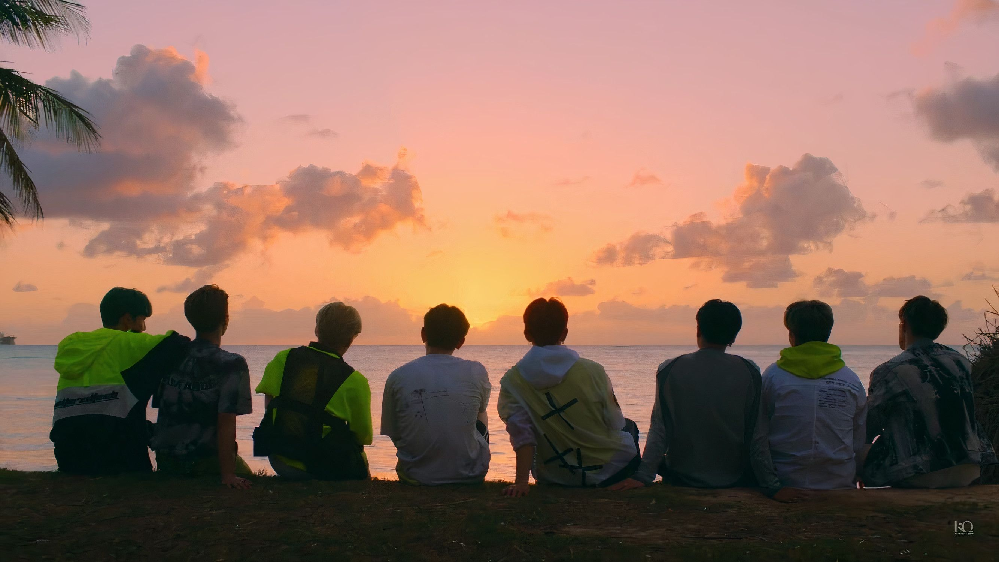
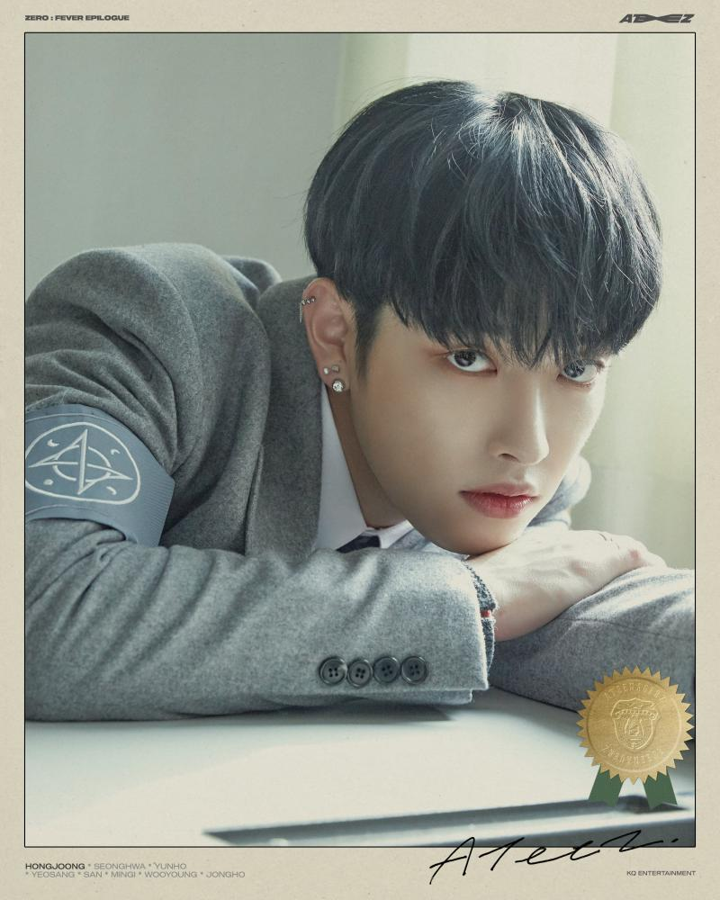
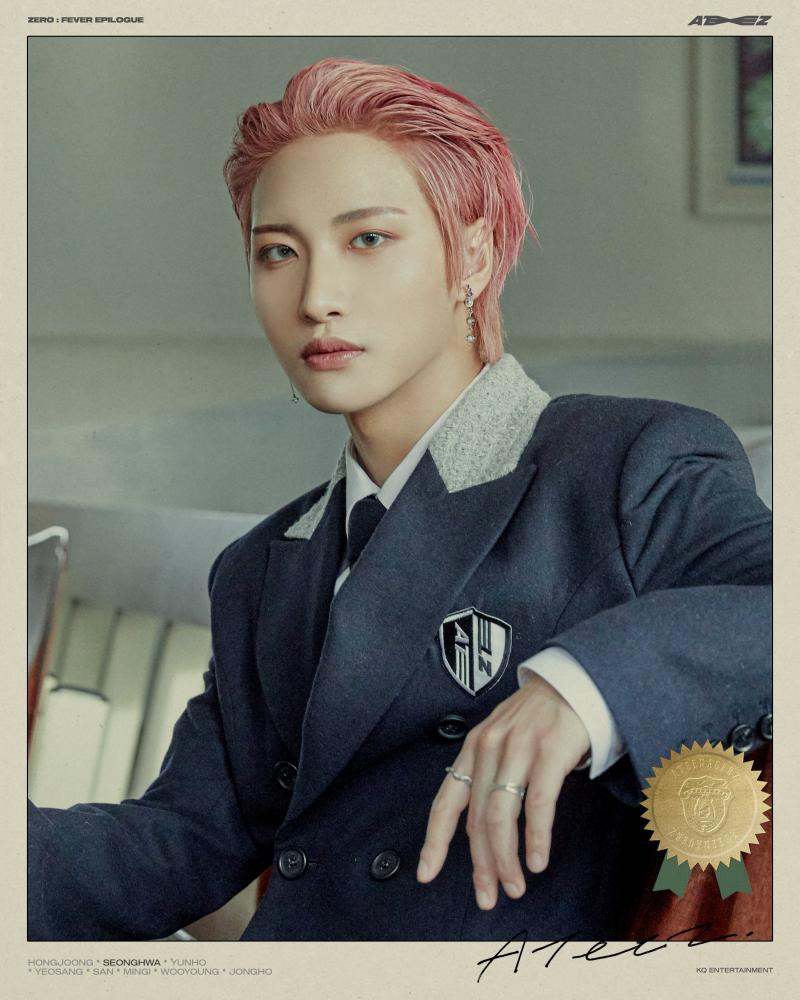
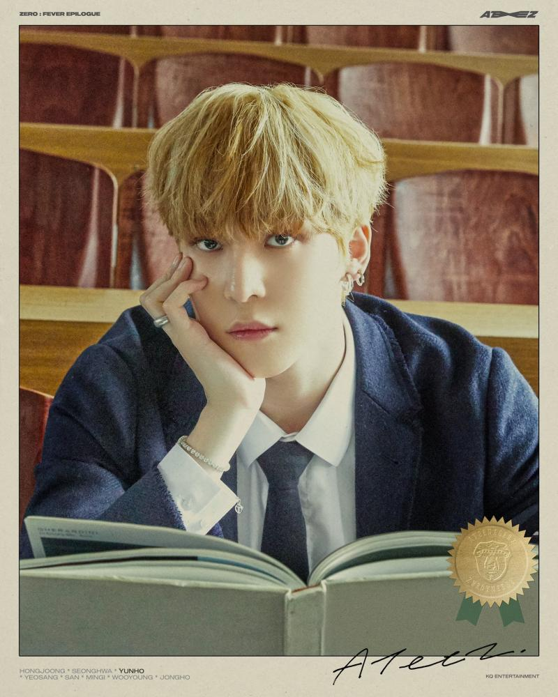
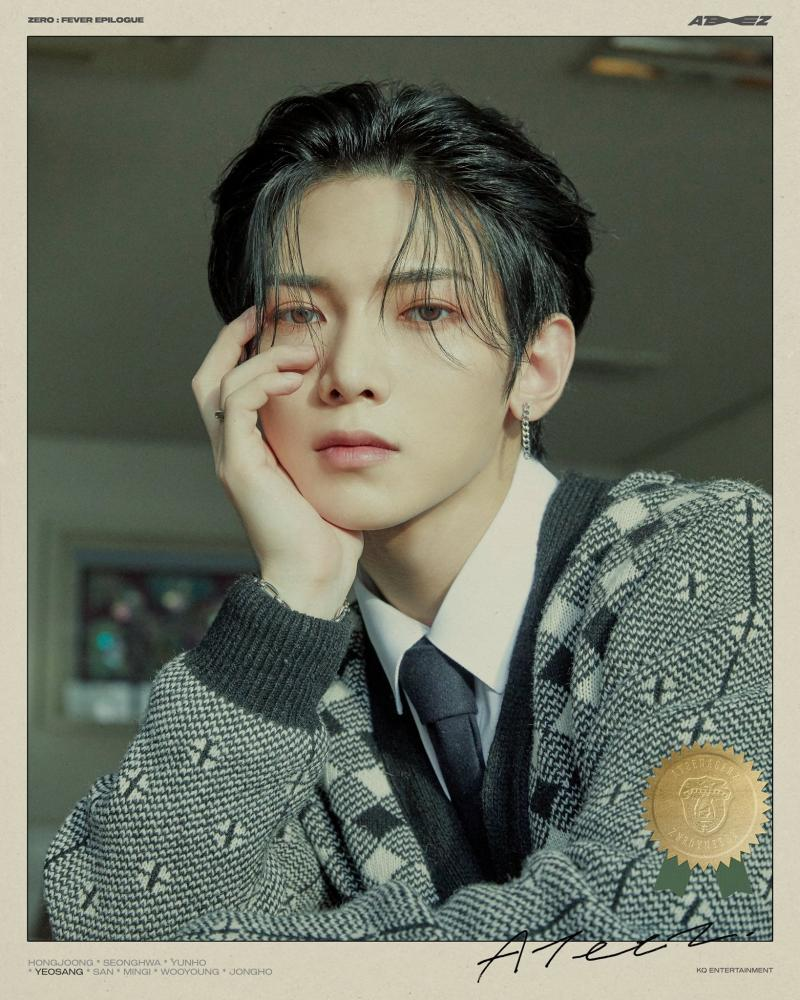
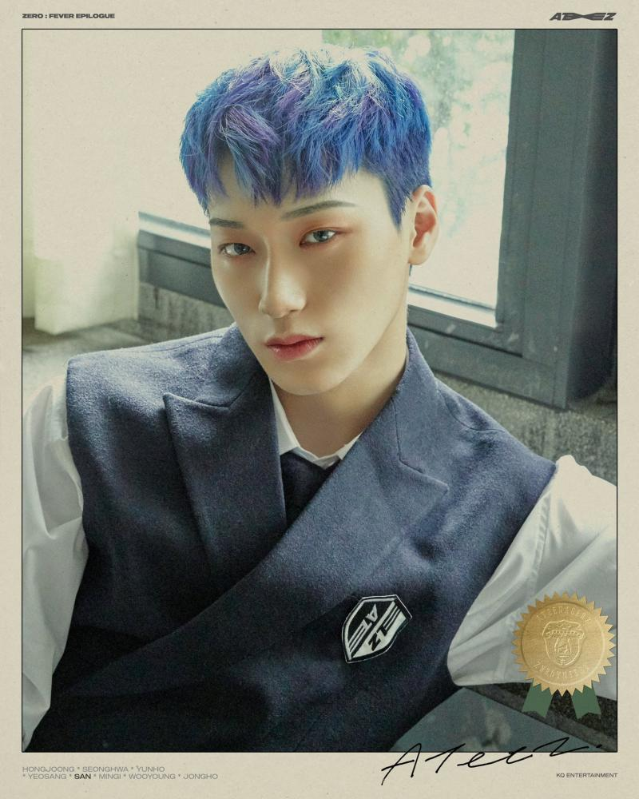
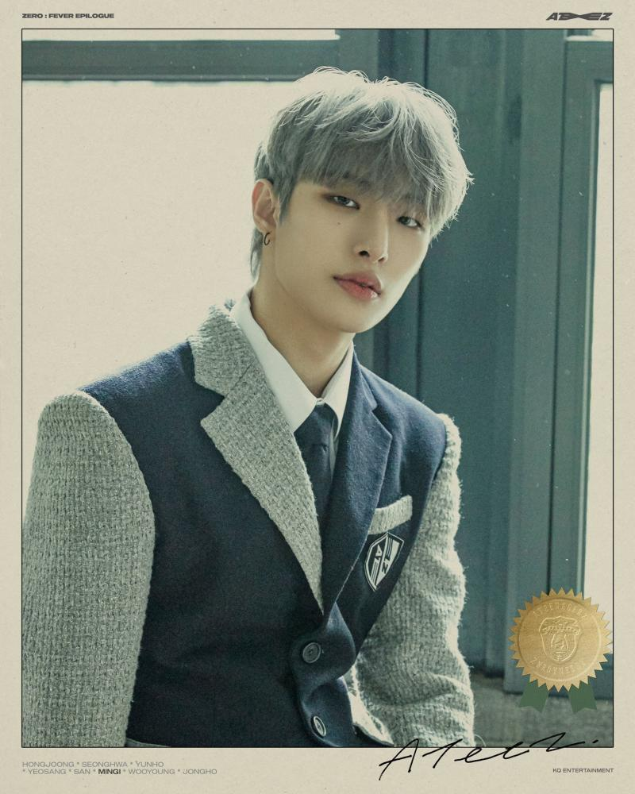
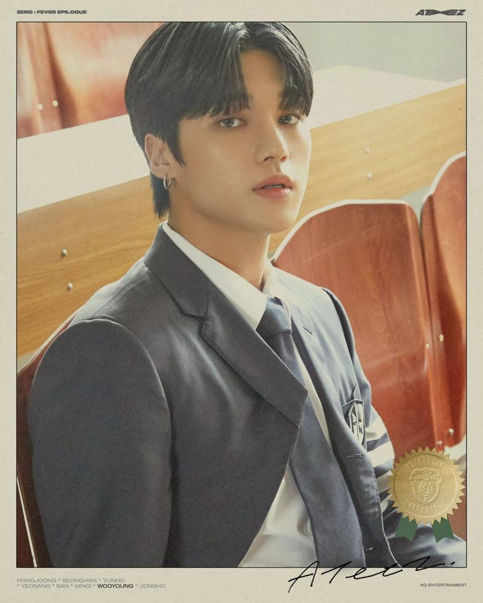

Ateez(에이티즈) is an 8-member boy group under KQ Entertainment. Members consist of Park Seonghwa, Kim Hongjoong, Jung Yunho, Kang Yeosang, Choi San, Song Mingi, Jung Wooyoung, Choi Jongho. The group was launched to fame via the YouTube series in mnet's channel “KQ Fellaz American Training”, in which members travelled across the Pacific to receive instruction in the various skills needed to become K-pop stars.
Debut Date: 24th October 2018
Debut Album: Treasure Ep.1: All to Zero
Debut Title Track: Treasure and Pirate king
Ateez Name Explaination: ATEEZ is an acronym for "A TEEnager Z", It also stands for "A to Z" meaning everyone, they are a group of teenagers who are aiming to do everything they can enthusiastically.
Fandom Name: Atiny(a combination of Ateez + Destiny)
Latest Comeback: ZERO:FEVER Epilogue(released Last December 10,2021) with the title tracks Turbulence and The Real
Latest korean single: Don't Stop(universe single released last January 21, 2022)
Upcomming (Korean) Comeback release: July 2022(album title is yet to be released)
Latest (Japanese) Comeback: Dreamers(released last July 28,2021)
Upcomming (Japanese) Comeback: Beyond Zero(will be realeased May 25,2022)
Kim Hongjoong
(Leader, Captain, Rapper, Composer, Center)

Park Seonghwa (Vocalist, Visual, Oldest) 
Jung Yunho (Performer, Vocalist) 
Kang Yeosang (Vocalist, Performer, Visual) 
Choi San (Vocalist, Performer) 
Song Mingi (Performer, Rapper) 
Jung Wooyoung (Performer, Vocalist) 
Choi Jongho
(Main Vocalist, Maknae)